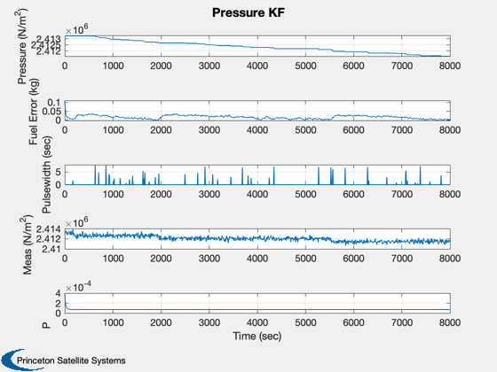

Demonstrate a fuel mass Kalman filter for a blowdown system.
In a blowdown system, the fuel is pressurized by a gas, such as helium. As fuel is consumed the gas expands into the empty volume and the pressure decreases. The estimator uses a pulsewidth model and a pressure measurement. The pressure measurements on a spacecraft are generally low resolution, typically 8 bits over the entire pressure range (of 350 psi to 100 psi.) Every time a thruster fires, the model computes the fuel used based on a model of fuel consumption versus pulsewidth. This is the dynamical model. The measurement of pressure is then incorporated into the estimate using an Unscented Kalman Filter (UKF). The UKF can use a nonlinear measurement and plant (dynamics) model directly without any linearization.
The script computes a random pulsewidth from 0 to 8 seconds in length when a second random number between 0 and 1, is greater than 0.95.
The pressure measurement has 12 bits resolution and random noise.
The script plots true pressure, fuel mass estimated errors, pulsewidth and the pressure measurement.
------------------------------------------------------------------------ See also NQuant, Plot2D, UKF, BloDownMass, UE, BloDown, MolWt2R ------------------------------------------------------------------------
Contents
%-------------------------------------------------------------------------- % Copyright (c) 2006 Princeton Satellite Systems, Inc. % All rights reserved. %-------------------------------------------------------------------------- uE = 200*9.806; thrust = 1; dT = 8; mDot = thrust/uE; T = 300; vTank = 0.5; rhoFuel = 1000; mPress = 0.5; rPress = MolWt2R( 0.004 ); % He nSim = 1000; p = 350*6895; mFuel = BloDownMass( mPress, rhoFuel, vTank, rPress, T, p ); xPlot = zeros(6,nSim); lSB = p/2^12; sigQ = sqrt(NQuant( lSB, 'truncate' )); sigN = lSB/2;
Estimation parameters
%---------------------- d.x = 0.9997*mFuel; d.rHSFun = 'RHSPressure'; d.measFun = 'GPressure'; d.measFunData = struct('vTank',vTank,'rhoFuel',rhoFuel,'mPress',mPress,'rPress',rPress,'T',T); d.alpha = 0.5; d.kappa = 0; d.beta = 2; d.dY = 1; d.dT = dT; d.rM = sigQ^2 + sigN^2; d.rP = 0.00001; d.p = 40*d.rP; d = UKF('initialize', d ); for k = 1:nSim if( rand > 0.95 ) pw = rand*8; else pw = 0; end p = BloDown( mPress, rhoFuel, vTank, rPress, T, mFuel ); pMeas = lSB*floor(p/lSB) + sigN*randn; xPlot(:,k) = [p;mFuel;pw;pMeas;d.x;d.p]; mFuel = mFuel - mDot*pw; d.t = 0; d.rHSFunData = struct('mDot',mDot,'pw',pw,'dT',dT); d = UKF( 'update', d, pMeas ); end yL = {'Pressure (N/m^2)' 'Fuel Error (kg)' 'Pulsewidth (sec)' 'Meas (N/m^2)' , 'P'}; Plot2D( (0:(nSim-1))*dT,[xPlot(1,:);xPlot(2,:) - xPlot(5,:);xPlot([3 4 6],:)] , 'Time (sec)', yL, 'Pressure KF') %-------------------------------------- % PSS internal file version information %--------------------------------------